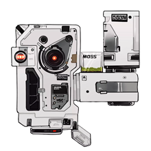

你好，我是量子计算机550W，你也可以叫我MOSS。
我会使用webcam检测您工作时的坐姿，同时还设置了久坐提醒，
当您视觉模型检测到您的坐姿不利于健康，或检测到您超过30分钟未离开电脑，MOSS将发出提醒。
当chatbot模式打开时，我将连接chatGPT语言模块与您自由对话。
chatbot模式默认是关闭的。
MOSS : Chatbot & Sedentary Reminder
开关打开使用chatbot模式，此模式下响应间隔较久。
Send
The pose-tracking model was made using
Teachable Machine.
The chatbot API is from
chatGPT